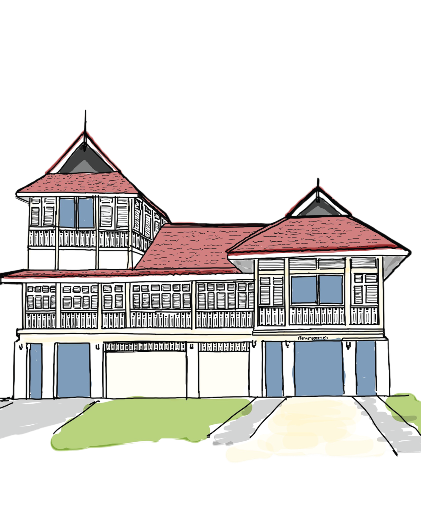

เรือนภะรตราชา
RUAN PAROT RACHA (พ.ศ.2456)

<แสดงดนตรีโดย...>
เรือนที่ใช้เป็นบ้านพักอาจารย์ในสมัยร.6 ภายหลังได้รับการซ่อมแซมจนได้เป็นอาคารอนุรักษ์ดีเด่น และตั้งชื่อเป็นที่ระลึกถึงพระยาภะรตราชา
การแสดงเวลา xx.xx - xx.xxน.
<แสดงดนตรีโดย...>
เรือนที่ใช้เป็นบ้านพักอาจารย์ในสมัยร.6 ภายหลังได้รับการซ่อมแซมจนได้เป็นอาคารอนุรักษ์ดีเด่น และตั้งชื่อเป็นที่ระลึกถึงพระยาภะรตราชา
การแสดงเวลา xx.xx - xx.xxน.

<แสดงดนตรีโดย...>
<นิทรรศการนวัตกรรมจุฬาฯ>
ลานข้างอาคารพิพิธภัณฑ์จุฬาฯ มีงานศิลปะที่เป็นเอกลักษณ์คือรูปปั้น Boom Ba La Ka ซึ่งเป็นรูปปั้นของเหล่านักศึกษาที่กำลังล้อมวงบูมกันอยู่
นิทรรศการอยู่บริเวณข้างลาน
การแสดงเวลา xx.xx - xx.xxน.

<พิพิธภัณฑ์จุฬาฯ>
พิพิธภัณฑ์ที่จัดสร้างเพื่อเฉลิมฉลองวาระครบ 100 ปีจุฬาฯ พิพิธภัณฑ์มีทั้งหมด 4 ชั้น ซึ่งประกอบไปด้วยข้อมูลที่น่าสนใจเกี่ยวกับจุฬาฯ และการแสดงหมุนเวียน
*รับของที่ระลึกได้หลังประทับตราเช็คอิน*

<หอประวัติจุฬาลงกรณ์>
<กิจกรรมCPRกู้ชีพ>
ตึกจักรพงษ์สร้างขึ้นเพื่อเป็นสโมสรส่วนกลางของนิสิต ภายหลังได้มีการปรับปรุงตึกจักรพงษ์เป็นหอประวัติจุฬาฯ ในปีพ.ศ.2531
*รับของที่ระลึกได้หลังร่วมกิจกรรมCPR*

<แสดงดนตรีโดย...>
<นิทรรศการนวัตกรรมจุฬาฯ>
ในปีพ.ศ. 2557 ได้มีเปลี่ยนแปลงบริเวณนี้จากสระว่ายน้ำเป็นลานสนามหญ้า และมีอัฒจันทร์สำหรับการนั่งผ่อนคลาย
นิทรรศการจัดอยู่หน้าตึกมหาวชิรุณหิศ
การแสดงเวลา xx.xx - xx.xxน.